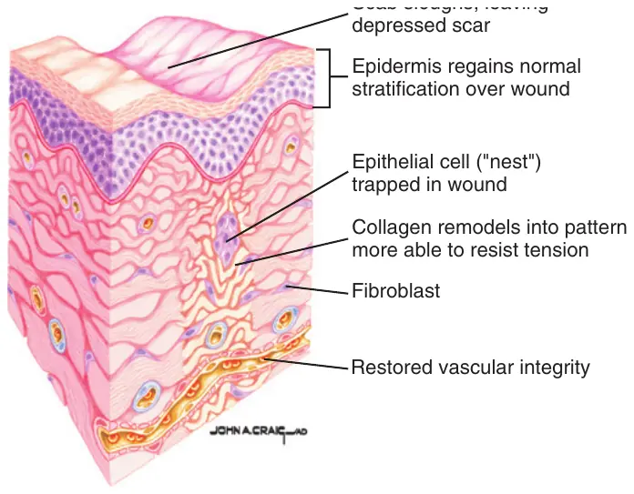
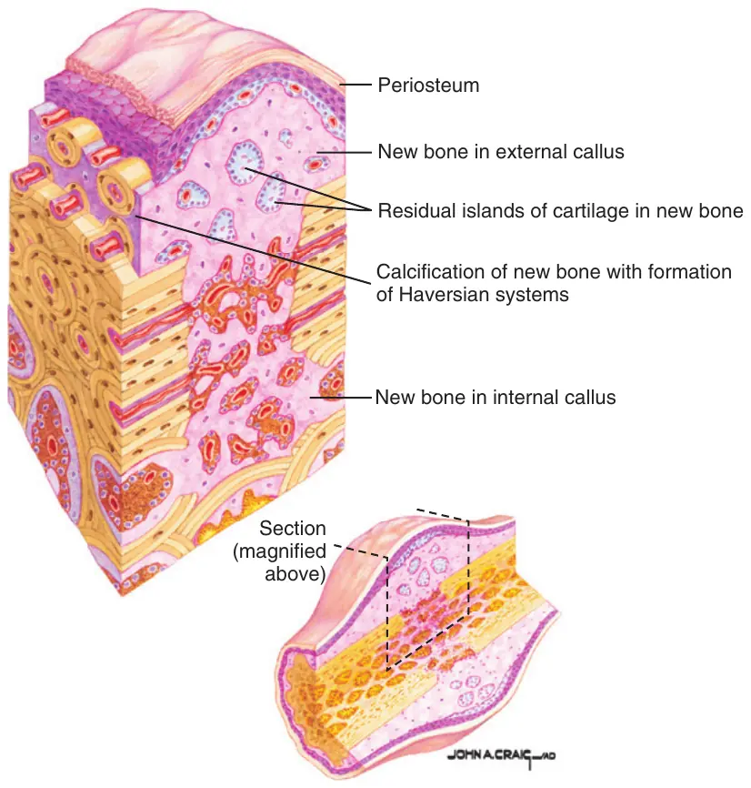

نسخه استخراجشده؛ ترجمه یا تأیید علمی انجام نشده است. وضعیت: captured
در سیویک یونیت گذشته، چند اصل بارها و در زمینههای کاملاً متفاوت بازگشتند. اینجا کنار هم میبینیشان.

رشتهی ۱ — ترتیب تهاجم: همیشه از کمتهاجمیترین گزینه آغاز کن.
رشتهی ۲ — مایع راکد، محیط کشت است.
رشتهی ۳ — پایهی بافت نرم، خط حیات است.
رشتهی ۴ — کشش، ترمیم را مختل میکند.
و سه رشتهی دیگر — بههمراه اصلی که زیر همهشان است — در اسلاید بعد.
رشتهی ۵ — منشأ، درمان را تعیین میکند.

رشتهی ۶ — آنچه میبینی، همهی ماجرا نیست.
رشتهی ۷ — گاهی بهترین کار، کاری نکردن است.
و یک اصل هشتم که زیر همهشان است: از بحث مسئولیت قانونی — «بیمارانی که انتظارات معقول و رابطهی مساعدی با دندانپزشکشان دارند، بسیار کمتر احتمال دارد شکایت کنند و بیشتر احتمال دارد عوارض را تحمل نمایند.» یعنی گفتوگو، خودش بخشی از درمان است.